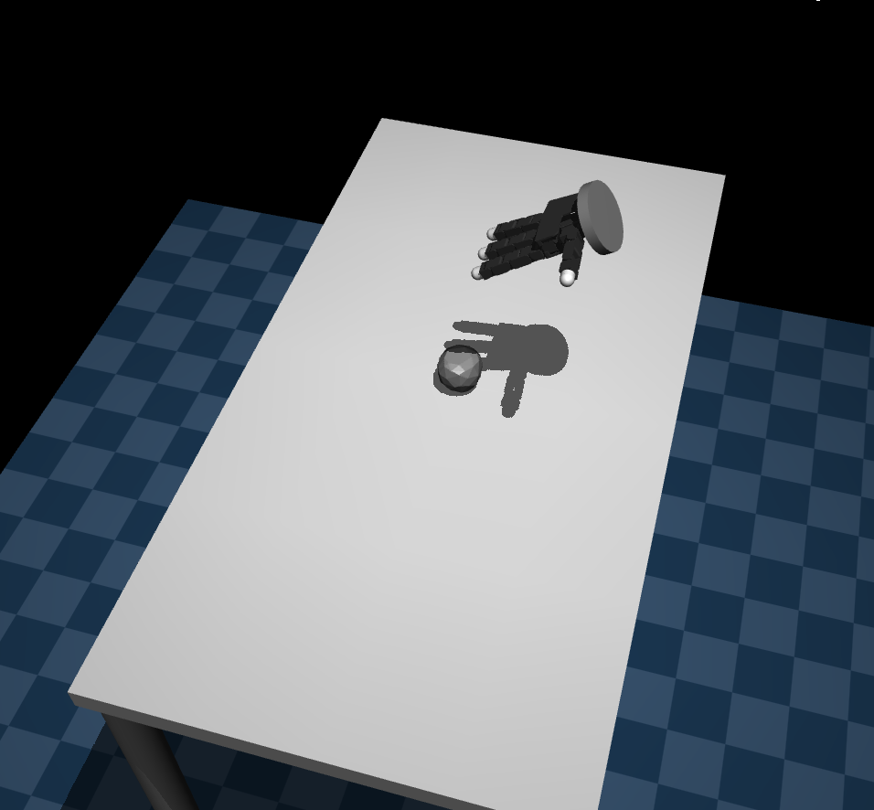
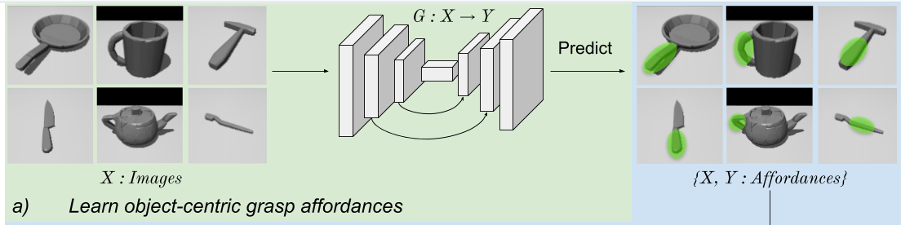
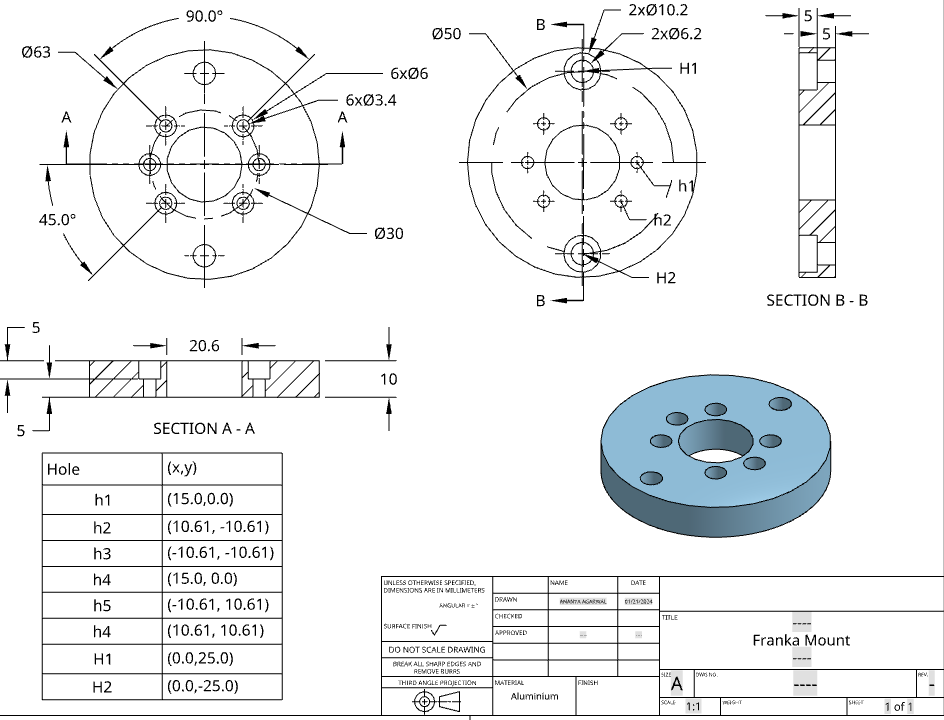
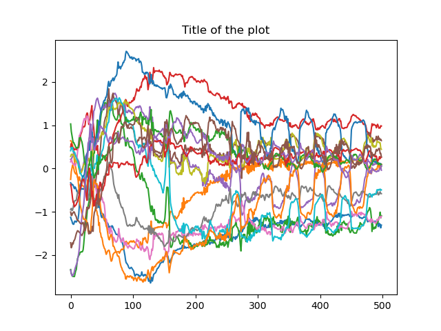
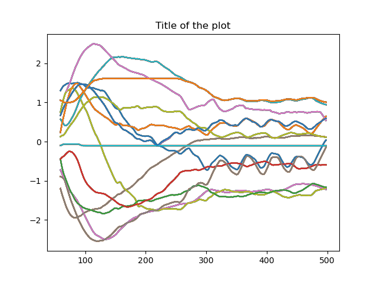
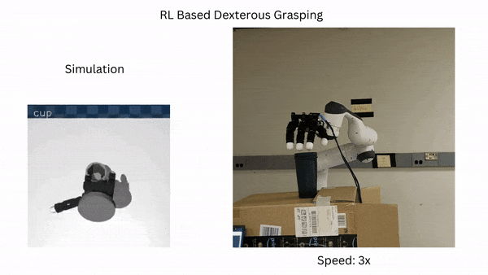

Brief Overview
The objective of this solo project was to enable a multi-finger robot to grasp commonly used objects. The project utilized the Mujoco environment for policy training and implemented sim2real techniques to deploy the trained policy onto the physical robot.
Video demo
Software setup
The Mujoco environment was used for policy training. The environment was set up on a local machine and the policy was trained using the OpenAI Baselines library.
Mujoco
Mujoco environment is used to simulate the physics between robot and the object. Each environment has one object at a time.
There are 22 actuators for the robot: 16 corresponding to the joints in the fingers and 6 corresponding to the pose of the robot.

Camera Positions:
- first_person
- left
- right
- egocentric
- egocentric_zoom
Each finger along with palm also has a touch sensor which is used to detect wether the object is in contact with the finger or not.
Policy Training
The project is inspired by Learning Dexterous Grasping with Object-Centric Visual Affordances.
The image from the fixed camera is used to predict the affordances, i.e. the part of the object that should be held by the robot. This network is trained on contactdb dataset.

RL Training: An actor critic model is used to train the PPO policy. OpenAI StableBaseline library is used is used to implement it.
Action Space: It is a 22DoF system with a continous space between joint limits.
Hardware
Allegro Hand is attached to a Emika Panda Franka arm using a machined part.

Sim2Real
The joint angles from the simulation are used.
Once we have the joints angles for a good grasp, it is smoothened and sent to the robot.

Joint states from the policy

Joint states given to robot
These joint states are given to Allegro hand using the PD controler it offers and franka is controlled through telleop.
Results
The policy was trained for 1M timesteps.
